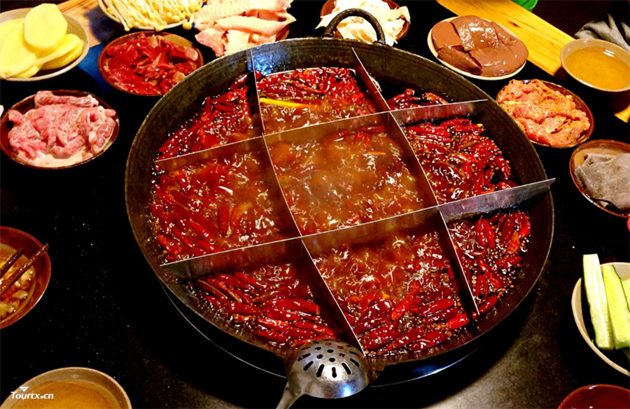
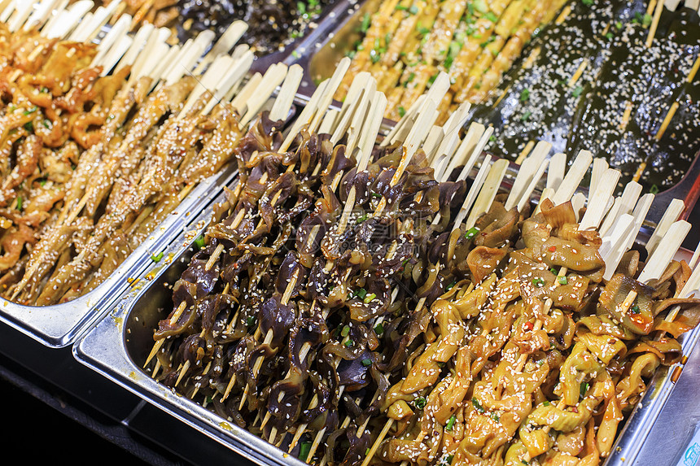
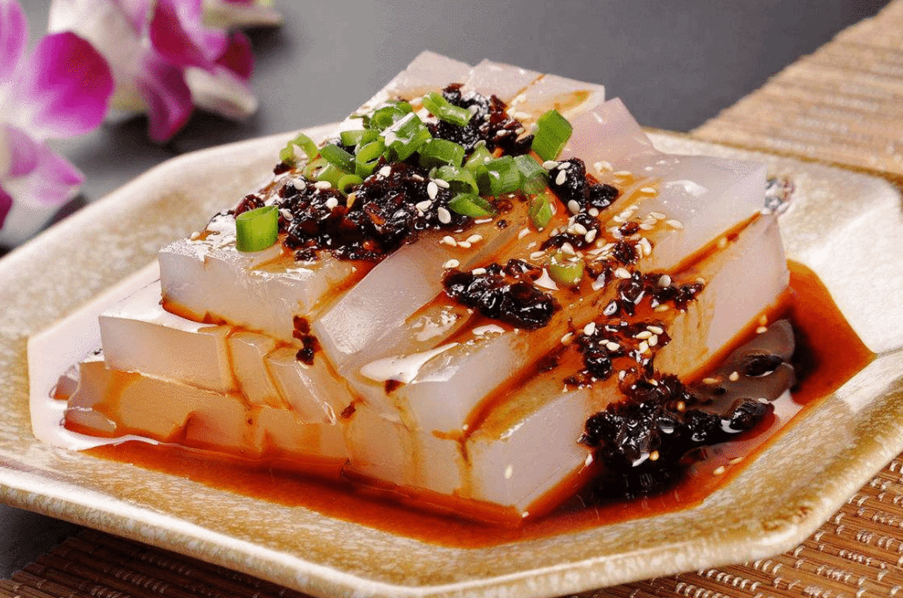
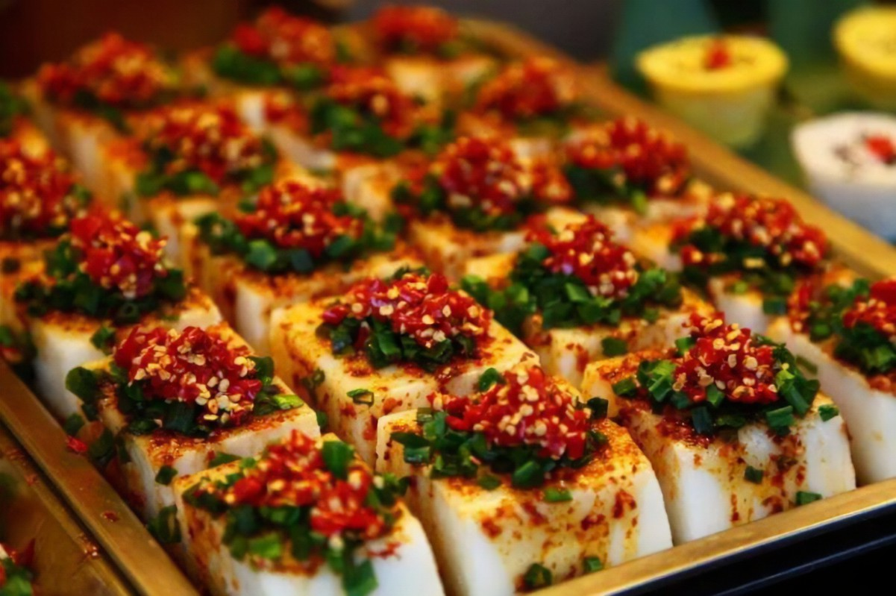
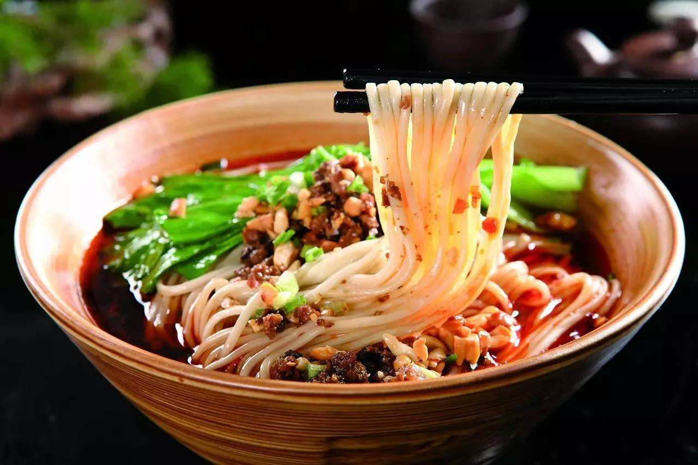
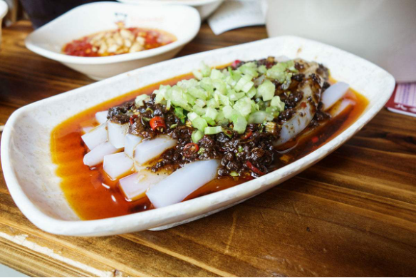
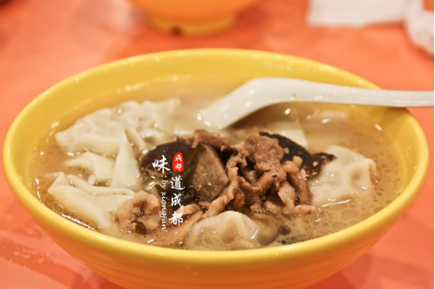

特色美食介绍
担担面是成都的美食名片之一，因早期常由商贩挑着担担贩卖而得名。如今，担担面已遍布全国各地，但要品尝最正宗的担担面，还是得来成都。不止游客喜爱担担面，成都当地人也痴迷于这传统小吃。
伤心凉粉是一道客家美食，也是成都的特色小吃。成都最正宗的伤心凉粉在龙泉驿区的洛带古镇，这里是伤心凉粉的发源地。这种凉粉作料众多，味道十分麻辣，最好的吃法是辛辣的凉粉配上甜的冰粉，这样可以缓解辣味儿。
抄手是四川人对于馄饨的叫法，而龙抄手则是抄手中最著名的老字号。相比较于普通的馄饨，成都的龙抄手皮极薄，呈半透明状，非常受当地人及游客的欢迎。

欢迎来到成都！！！
Welcome to ChengDu!!!